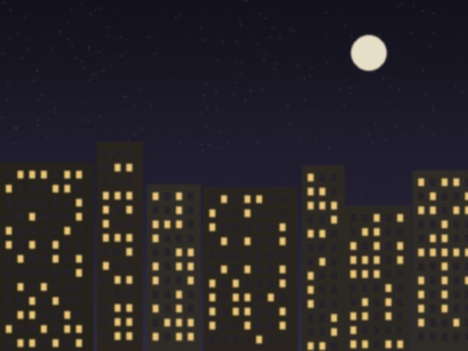

Site for a toikana
09 June 2013 · work

The toikana at night, lights on. The photo for the front page.Finished a site for a wedding hall: menu, photo gallery, booking by phone. The owner wanted music on the front page. I said no. He said yes. There is music on the front page.
No Comments
Comments are closed.